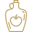

Пейте яблочный уксус
Он снижает уровень сахара в крови, способствует похудению, очищает организм от шлаков и токсинов.
Придерживайтесь обычного времени приема пищи
Это может показаться очевидным предложением, но ешьте пищу через регулярные промежутки времени.
Ешьте фрукты утром
Мы должны есть пять порций фруктов и овощей в день, чтобы поддерживать здоровый образ жизни.